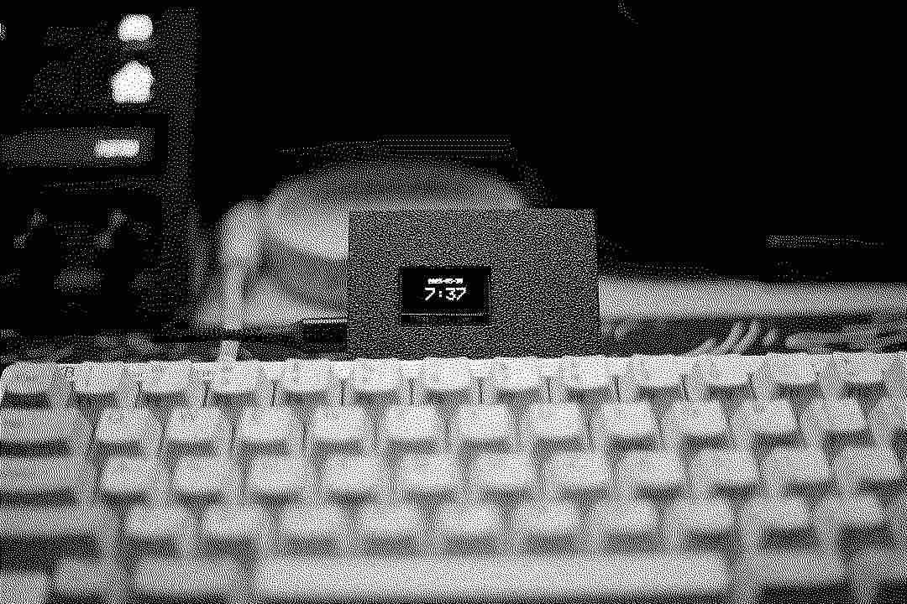

hytheaway
(.github.io)
garrett's great esp32 clock (may 2025)
have you figured out my naming scheme?
github
in my project garrett's great hrtf (& sofa) functions, i made a joke about classes, which is obviously a very fundamental aspect of programming, but is also an aspect that
i'm fine with ignoring when it's not required at all.
if i'm just writing code to run a couple functions, yea, i probably don't need classes. but for comedic effect, i definitely made it
seem like i hated classes more than i actually do.
make no mistake.
that hatred is real for c.
anyway, i have this cool elgato stream deck. i love it, it replaced my old macropad in seconds. one issue i have with it, though, is that when my computer goes to sleep, so does it, and since i
use it as my desk clock, then i have no clue what time it is if i'm not using my computer (which is redundant, since the computer also has a clock).
so, there's my problem. i want a clock for my desk so that i know what time it is at a glance. but, it can't take up too much space. space is at a premium on my desk, and i hate the feeling of
clutter in the space where i'm supposed to be productive. i went to amazon to find a small but easily readable clock for my desk, and honestly, i wasn't thrilled with either the options nor the prices.
besides, i had this esp32 kicking around, and it so well known and utilized (along with the ssd1306 display) that i figured someone has definitely already done made a clock for the esp32 with the ssd1306.
guess what doesn't exist? that.
but i was still super not in the mood for writing my own software for this, so i spent the better part of 2 or 3 hours trying to retrofit other peoples' clock softwares
with each other, making it all work together, but it just wasn't working, over and over again. it was half past 11pm (not that i'd know), i was tired, and decided i should handle this with a fresh
pair of eyes in the morning. but, as i was trying to sleep, i just couldn't shake this frustrated feeling. it felt like i left the oven on, mixed with the knowledge that i could turn it off. i tried ignoring
the feeling, closing my eyes, trying to unwind and decompress, but it just kept building and building until i finally angrily lept out of bed, opened up my laptop again, and in less than an hour i had
a fully working, fully featured clock.
maybe that's why i dislike c so much. with the experience level i'm at right now, it's almost always more effective to scrap everything and start from scratch than try to salvage a program that isn't
working for seemingly no reason.
so, if you have an esp32 and an ssd1306, and you want to make a clock out of it (which, to be fair, an esp32 is major overkill for just a clock), now there's a solution. if you wanted to 3d print a
case like the one i have, i left the files in the same repo, too, but obviously different esp32 chips will vary, and my screen is just hot glued to the top case.
also, it was super annoying getting photos with the refresh rate of that screen relative to the shutter speed of my camera. but they look pretty.
and now i have a clock.

